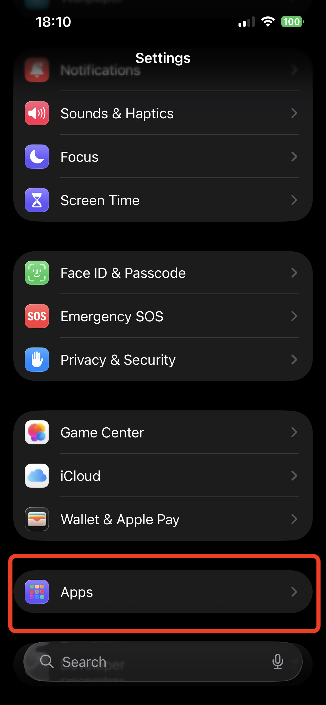
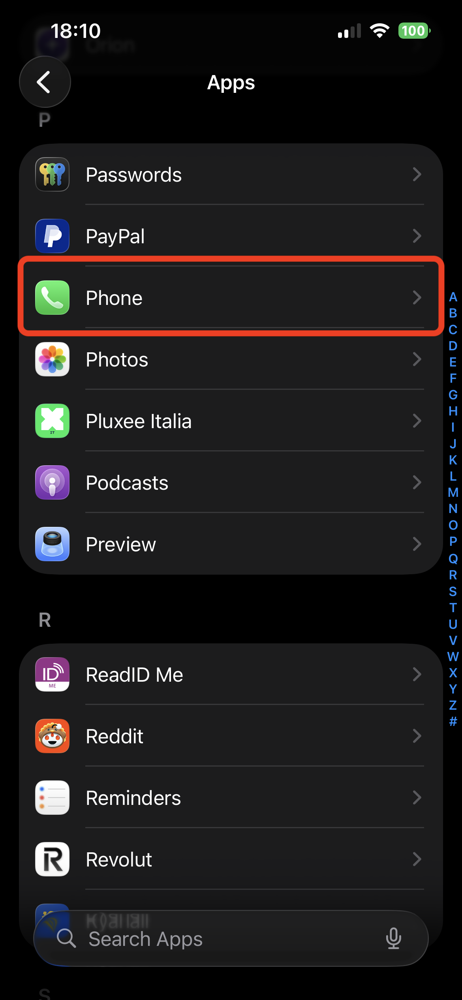
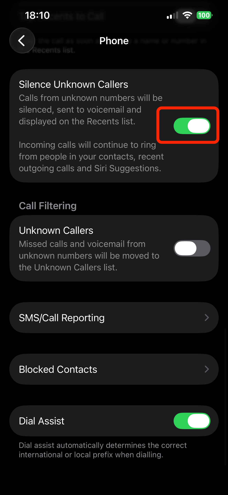

How to Enable "Silence Unknown Callers"
Follow these 3 simple steps on your iPhone to stop spam calls from ringing.
Pro Tip
Can't find it? Swipe down in Settings to reveal the search bar and type "Silence".
1
Open Settings
Unlock your iPhone and open the Settings app. Scroll down until you find the list of apps.

2
Select Phone
Tap on Phone. This is where you control how your iPhone handles incoming calls and spam.

3
Enable Feature
Scroll down to Silence Unknown Callers and toggle the switch to ON (Green).

That's it! RingBack will now filter the silent calls and notify you on your Mac if they are safe.